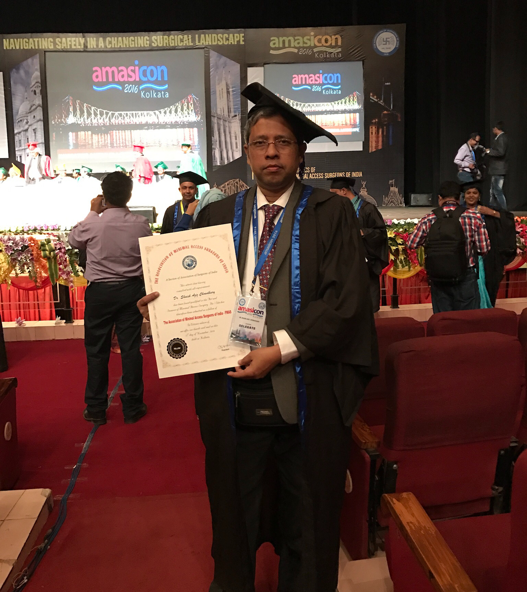
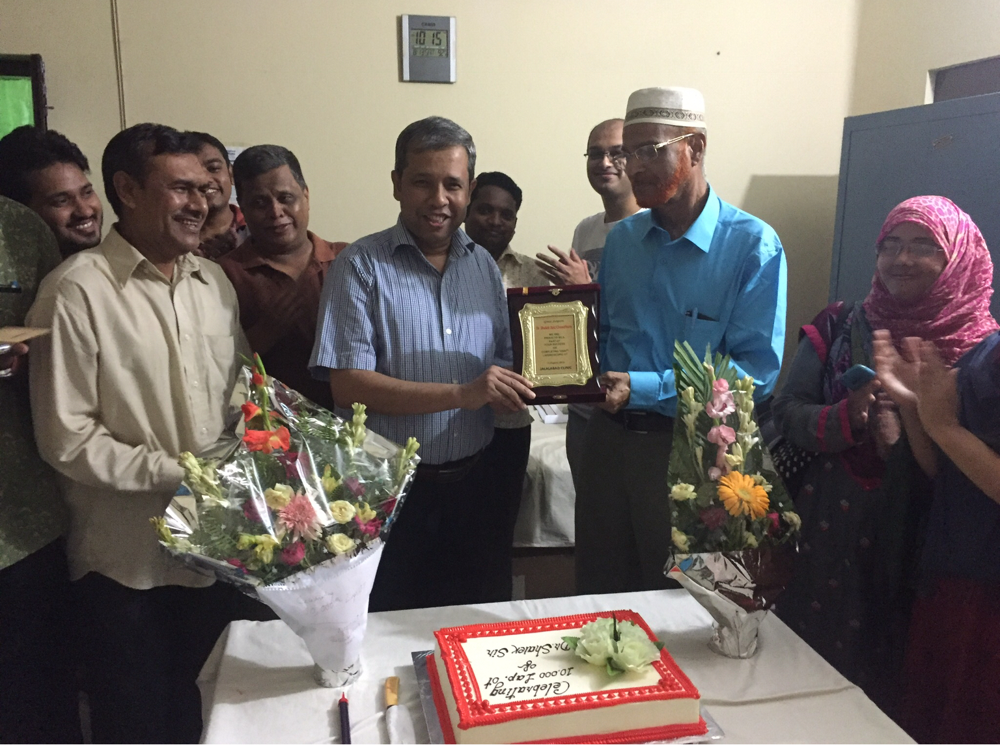
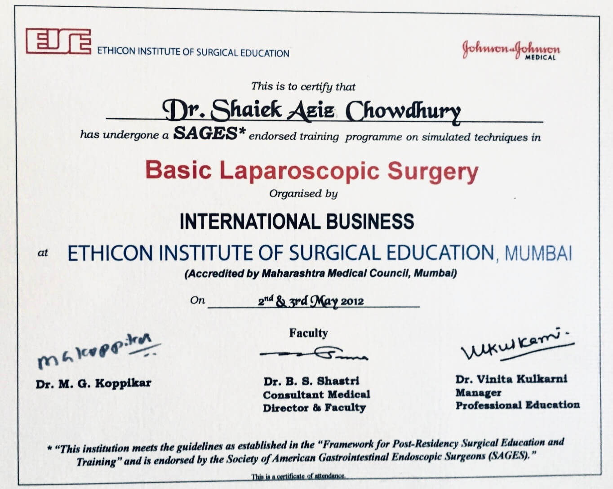
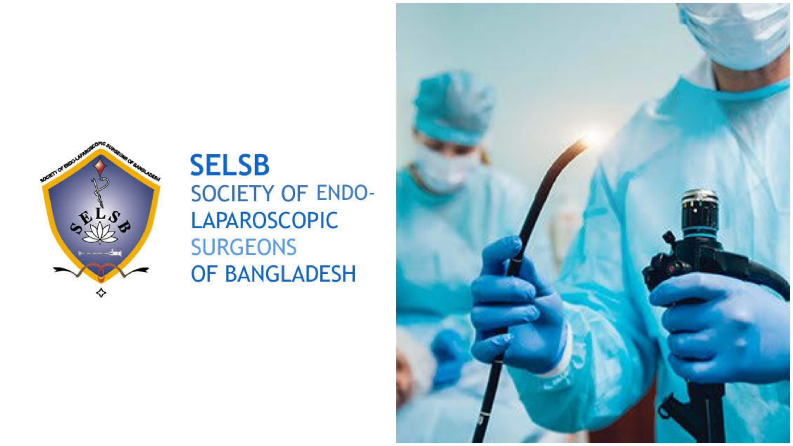
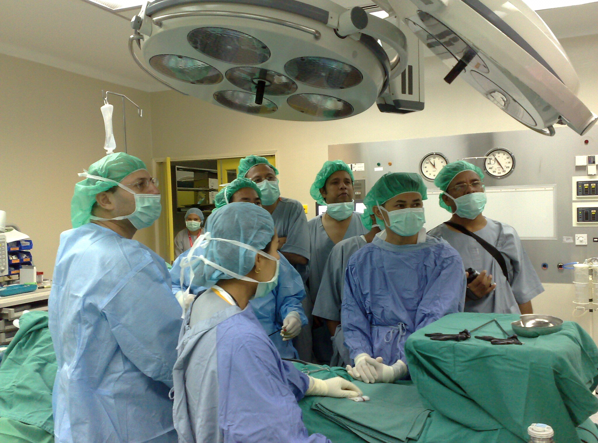
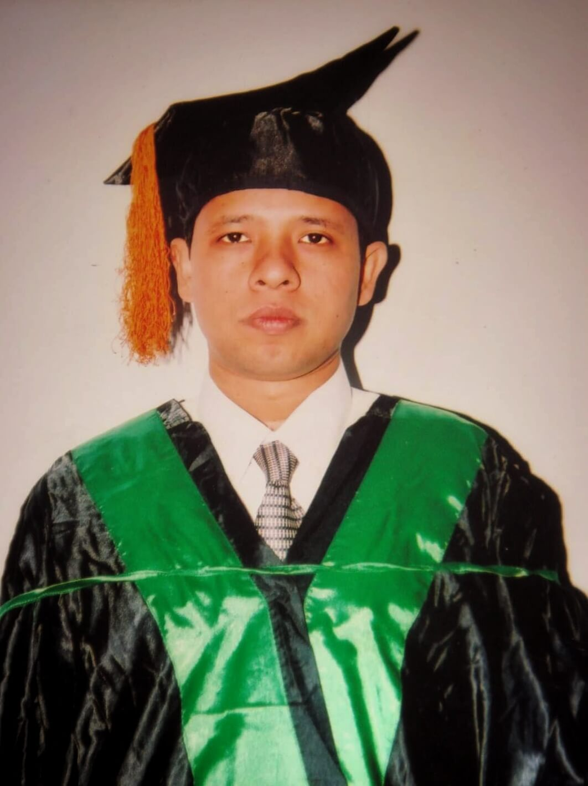
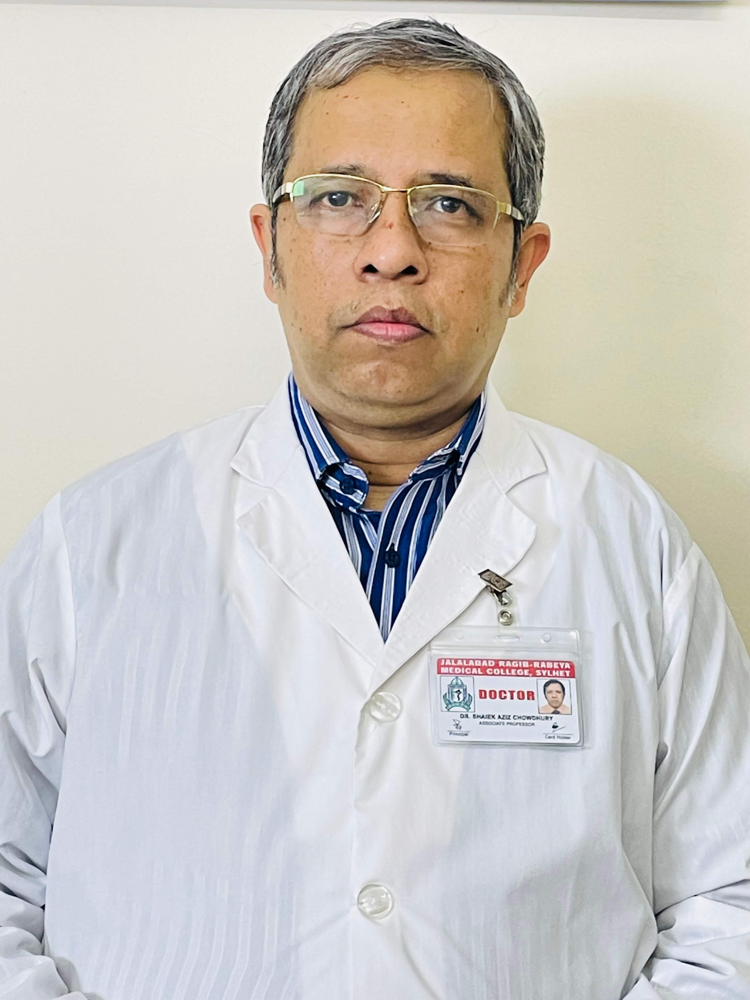

Pioneer of 3D 4K Laparoscopic Surgery in Bangladesh
Dr. Shaiek was the first person to take the initiative to bring 3D 4K Laparoscopy in Bangladesh
Nov 2016

Fellowship in Minimal Access Surgery (FMAS)
Awarded by Association of Minimal Access Surgeons of India
Aug 2016

Ten thousand Laparoscopic Surgeries
Performed his ten thousandth laparoscopic surgery
May 2012

Trained in Basic Laparoscopic Surgery
By Ethicon Institute of Surgical Education, Mumbai
Aug 2008

Trained in Upper G.I. Endoscopy
At the department of Surgery, BSMMU under the supervision of Professor Dr. A.H.M. Towhidul Alam organized by Society of Laparoscopic Surgeons of Bangladesh (SLSB)
July 2008

Trained in Hepatobiliary Surgery
At Selayang Hospital, Malaysia
July 1998

Fellowship of College of Physicians and Surgeons (FCPS in surgery)
Awarded by Bangladesh College of Physicians and Surgeons (BCPS)
July 1991

Bachelor of Medicine and Bachelor of Surgery (MBBS)